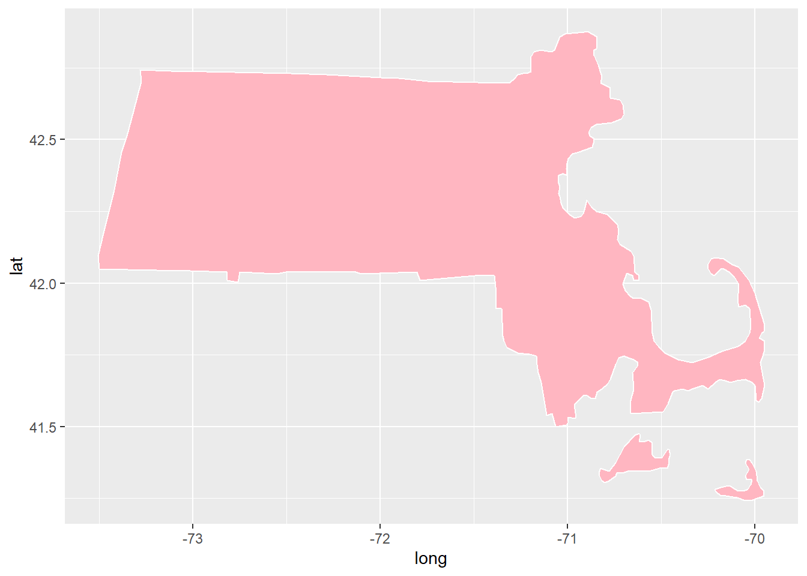

knitr::opts_chunk$set(echo = TRUE, warning=FALSE, message=FALSE)
knitr::opts_chunk$set(echo = TRUE)DACSS 601 Final Project - Caitlin Rowley
My final project provides an analysis of data related to Boston Airbnb listings from 2021.
Introduction
For my final project, I selected data from the Inside AirBnB website, which allows the public to access information regarding listings by geographic area. My data set captures host- and room-specific metrics related to all Airbnb rental listings in Boston, MA from September 2021 through September 2022. Information for each listing included in the data set is presented using the following variables: (1) ID number for the particular listing, (2) name of the listing, (3) listing host ID number, (4) listing host name, (5) listing neighborhood group, (6) listing neighborhood, (7) listing latitude, (8) listing longitude, (9) type of listing (i.e., private room, entire home/apartment, shared room, or hotel room), (10) listing price, (11) minimum number of nights per stay, (12) number of listing reviews, (13) most recent listing review, (14) number of listing reviews per month, (15) number listing-specific host listings (i.e., the number of unique listings by host), (16) listing availability over the next year, (17) number of reviews for listing over the past 12 months, and (18) listing licensure status. The combination of each of these variables makes up a case, which in this instance equates to a unique Airbnb listing.
In reviewing these data, I thought it would be interesting to evaluate the following research question: Are there are particular listing features—specifically, listing neighborhood and listing type—that may contribute to listing price? As part of this task, I will also be running analyses on additional summary statistics to gain a better understanding of patterns that may appear within the data.
Data
To begin this analysis, I will read in my data set.
# install packages and load libraries:
install.packages("readr")Error in contrib.url(repos, "source"): trying to use CRAN without setting a mirrorinstall.packages("readxl")Error in contrib.url(repos, "source"): trying to use CRAN without setting a mirrorlibrary(tidyverse)
library(readr)
library(readxl)
library(dplyr)
library(ggtext)Error in library(ggtext): there is no package called 'ggtext'# read in dataset:
setwd("C:/Users/caitr/OneDrive/Documents/DACSS/601_Fall_2022/posts")Error in setwd("C:/Users/caitr/OneDrive/Documents/DACSS/601_Fall_2022/posts"): cannot change working directoryBoston <- read_csv("Boston AirBnB Data.csv")Error: 'Boston AirBnB Data.csv' does not exist in current working directory ('C:/Users/srika/OneDrive/Desktop/601_Fall_2022/posts').head(Boston)Error in head(Boston): object 'Boston' not foundTidy Data
I will now tidy the data to look for missing values and duplicates. I will also rename columns as needed.
# look for duplicates
# look for missing values
# remember na.rm=TRUE for calculations
# At first glance, it seems as though there are no values in the column titled "neighbourhood_group." So, I will find all unique values within that column to determine whether it can be removed from my tidy data set.
unique(Boston[c("neighbourhood_group")])Error in unique(Boston[c("neighbourhood_group")]): object 'Boston' not found# I now know that there is no data within this column. I will remove it from my data set.
Boston_tidy <- subset(Boston, select = -c(neighbourhood_group))Error in subset(Boston, select = -c(neighbourhood_group)): object 'Boston' not found# I can see from viewing this data frame that there are no other columns that are absent any values, so I will move on to other tidying tasks.
# rename columns:
names(Boston_tidy) <- c('room_id', 'room_name', 'host_id', 'host_name', 'neighborhood', 'room_latitude', 'room_longitude', 'room_type', 'room_price', 'min_nights', 'number_reviews', 'last_review', 'reviews_per_month', 'host_listings', 'availability_next_365', 'number_reviews_LTM', 'room_license')Error in names(Boston_tidy) <- c("room_id", "room_name", "host_id", "host_name", : object 'Boston_tidy' not found# find duplicates:
duplicates <- duplicated(Boston_tidy)Error in duplicated(Boston_tidy): object 'Boston_tidy' not found# reached "max.print", so I will increase the limit and identify if any values within the vector = TRUE:
options(max.print=999999)
duplicates["TRUE"]Error in eval(expr, envir, enclos): object 'duplicates' not foundhead(Boston_tidy)Error in head(Boston_tidy): object 'Boston_tidy' not foundThe “Boston_tidy” data frame now has 17 variables and 5,185 rows of data. After removing the “neighborhood group” column (blank values across each case) and all additional duplicate and blank observations, each row now represents one unique case—or in this instance, a unique rental listing.
Next, I will mutate variables. I will start off by adding the variable “room_coordinates” to my overall data set. I think this may come in handy if I choose to use a map for visualization, as I may need to match coordinates between my data set and those included in mapping packages such as ‘map_data().’
# mutate lat and lon to create "room_coordinates"
# keep lat and lon columns for now
Boston_mutate <- Boston_tidy %>%
mutate("room_coordinates" = paste(room_latitude, room_longitude))Error in mutate(., room_coordinates = paste(room_latitude, room_longitude)): object 'Boston_tidy' not foundcolnames(Boston_mutate)Error in is.data.frame(x): object 'Boston_mutate' not foundExploratory Analysis
I will next conduct some exploratory analysis to glean more insight related to my data set. First, I will generate statistics using raw data (not excluding outliers or values equal to 0) related to room price, minimum number of nights per stay, number of reviews per room, and number of listings by host.
# summary statistics for entire data set:
summary.data.frame(Boston_mutate)Error in as.list(object): object 'Boston_mutate' not found# summary statistics for particular group of variables:
Boston_mutate %>%
select(room_price, min_nights, number_reviews, host_listings, availability_next_365) %>%
summary()Error in select(., room_price, min_nights, number_reviews, host_listings, : object 'Boston_mutate' not foundThis raw data indicates that room prices for Boston Airbnbs range from $0-$10,000 per night—both of which I would assume are outliers—with the median price equaling $179 per night and the average price equaling $231 per night. Regarding the minimum number of nights per stay, values ranged from 1-730 nights. At first, I assumed the maximum value was an outlier, but Airbnb does offer long-term stays (“long-term” being defined as more than 28 days), so it is possible that this particular listing is for long-terms stays only. I also included the number of reviews per listing in this analysis to see if this may be an indicator of the popularity of certain rooms and, by extension, certain hosts. In the same vein, I included number of room-specific host listings in this summary, with the values ranging from 1-477 listings. The median number of room-specific listings per host is 6, while the average is 62. The final component of this analysis is listing availability over the next 365 days. The values range from 0-365 days, with the median value being 187 days and the average being 190 days.
As a precursor to a deeper analysis on number of host listings, I filtered the data set to include only values greater than one in the “host_listings” column, which tells us the number of rooms listed by the same host.
# filter by hosts with more than one listing:
Boston_id <- Boston_mutate%>%
filter(host_listings>1)%>%
group_by(host_id, host_listings)Error in filter(., host_listings > 1): object 'Boston_mutate' not foundhead(Boston_id)Error in head(Boston_id): object 'Boston_id' not foundThis output indicates that that there are 3,918 room-specfic listings whose hosts have more than one unique listing in Boston’s Airbnb database.
We can also dig a little deeper into the number of room-specific listings by host for some additional context.
max_listings <- Boston_mutate%>%
select(host_id, host_name, room_name, neighborhood, host_listings, room_price, room_type)Error in select(., host_id, host_name, room_name, neighborhood, host_listings, : object 'Boston_mutate' not foundmax_477 <- max_listings[max_listings$host_listings == '477',]Error in eval(expr, envir, enclos): object 'max_listings' not foundunique(max_477$host_name)Error in unique(max_477$host_name): object 'max_477' not found# check listing prices:
summary(max_477$room_price)Error in summary(max_477$room_price): object 'max_477' not found# check listing room types:
unique(max_477$room_type)Error in unique(max_477$room_type): object 'max_477' not found# check listing neighborhoods:
unique(max_477$neighborhood)Error in unique(max_477$neighborhood): object 'max_477' not foundWe now know that there is one host, “Blueground,” who has 477 unique listings. This is the highest number of listings for a unique host within the entire data set. We do not gain much valuable insight from the remaining analyses, which indicate (1) summary statistics for the room prices across Blueground’s listings (prices range from $142-$487 per night), (2) room types included across listings (entire home/apartment), and (3) neighborhoods across listings (listings in 20 Boston neighborhoods); I just thought it would be interesting to see if there were any patterns. However, aside from room type, the data appear to be widely spread.
I will next generate some summary statistics for the categorical variable indicating listing neighborhood. Specifically, I would like to know which neighborhoods have the most and least number of listings.
# max listing by neighborhood:
unique_neighbor <- unique(Boston_mutate$neighborhood)Error in unique(Boston_mutate$neighborhood): object 'Boston_mutate' not foundunique[which.max(tabulate(match(Boston_mutate$neighborhood, unique)))]Error in match(Boston_mutate$neighborhood, unique): object 'Boston_mutate' not found# min listing by neighborhood:
unique_neighbor <- unique(Boston_mutate$neighborhood)Error in unique(Boston_mutate$neighborhood): object 'Boston_mutate' not foundunique[which.min(tabulate(match(Boston_mutate$neighborhood, unique)))]Error in match(Boston_mutate$neighborhood, unique): object 'Boston_mutate' not foundWe can see from this tabulation that the most frequently listed neighborhood is Allston, and the neighborhood with the least amount of listings is Brighton. I will keep this in mind as I continue with my exploratory analysis; it would be interesting to see if the number of listings in either of these two neighborhoods provides insight into room price.
Next, I will create a subset of data that includes the new variable “median_price,” which will only include room prices greater than $0. I will be using the median as the unit of measure to account for outliers.
# find median room price by neighborhood:
Boston_median_neighbor <- Boston_mutate%>%
filter(room_price>0) %>%
group_by(neighborhood)%>%
summarize(median_price = median(room_price))Error in filter(., room_price > 0): object 'Boston_mutate' not foundprint(head(Boston_median_neighbor))Error in head(Boston_median_neighbor): object 'Boston_median_neighbor' not foundsummary(Boston_median_neighbor$median_price)Error in summary(Boston_median_neighbor$median_price): object 'Boston_median_neighbor' not foundThinking back to my question regarding the relationship between number of listings, neighborhood, and room price, there does not seem to be a correlation. We know that Allston has the highest number of listings, but we can also see from this most recent analysis that it ranks 14th out of the 26 Boston neighborhoods in terms of median room price. Brighton, despite having the lowest number of room listings, is ranked 21st out of the 26 neighborhoods.
I will now see if we can glean any interesting insight from data related to median room price by room type.
# find median room price by neighborhood:
Boston_median_type <- Boston_mutate%>%
filter(room_price>0) %>%
group_by(room_type)%>%
summarize(median_price = median(room_price))Error in filter(., room_price > 0): object 'Boston_mutate' not foundprint(head(Boston_median_type))Error in head(Boston_median_type): object 'Boston_median_type' not foundsummary(Boston_median_type$median_price)Error in summary(Boston_median_type$median_price): object 'Boston_median_type' not foundThis analysis tells us that the median room price for a hotel across the city of Boston is $396 per night, the median price of an entire home/apartment is $229 per night, the median price of a private room is $84 per night, and the median price for a shared room is $42 per night. I will consider this as I move forward with additional analyses.
I will continue working with this data set, but I will now group by the original variables “room_type” and “neighborhood.” This will be useful in terms of both summary statistics and visualization.
# find median room prices by neighborhood and room type:
Boston_median <- Boston_mutate%>%
filter(room_price>0) %>%
group_by(room_type, neighborhood)%>%
summarize(median_price = median(room_price))Error in filter(., room_price > 0): object 'Boston_mutate' not foundprint(head(Boston_median))Error in head(Boston_median): object 'Boston_median' not foundsummary(Boston_median$median_price)Error in summary(Boston_median$median_price): object 'Boston_median' not foundWe can see from this data set that the highest median room price is $750/night for a shared room in the Fenway neighborhood. The lowest median room price is $10/night for a shared room in Charlestown. Additionally, while there is spread across room types when viewing the most expensive listings, many of the lower-cost listings are shared rooms, which aligns with our previous analysis.
I would like to dig a bit more into this by running additional analyses on listings in the Fenway and Charlestown neighborhoods.
# summary statistics for Fenway:
Fenway <- Boston_mutate%>%
filter(neighborhood=="Fenway")%>%
select(neighborhood, room_type, room_price)Error in filter(., neighborhood == "Fenway"): object 'Boston_mutate' not foundsummary(Fenway$room_price)Error in summary(Fenway$room_price): object 'Fenway' not found# group by room_type:
Fenway_group <- Fenway%>%
group_by(room_type)%>%
summarize(mean_price = mean(room_price, na.rm = TRUE))Error in group_by(., room_type): object 'Fenway' not foundFenway_groupError in eval(expr, envir, enclos): object 'Fenway_group' not found# 'table()' function not working, so filter by room type:
Shared <- Fenway%>%
filter(room_type=="Shared room")Error in filter(., room_type == "Shared room"): object 'Fenway' not foundhead(Shared)Error in head(Shared): object 'Shared' not foundPrivate <- Fenway%>%
filter(room_type=="Private room")Error in filter(., room_type == "Private room"): object 'Fenway' not foundhead(Private)Error in head(Private): object 'Private' not foundEntire <- Fenway%>%
filter(room_type=="Entire home/apt")Error in filter(., room_type == "Entire home/apt"): object 'Fenway' not foundhead(Entire)Error in head(Entire): object 'Entire' not foundWe now know that room prices in the Fenway neighborhood ranges from $35 per night to $1,277 per night. This is a substantial range, so I don’t think it provides much useful insight. However, we can see that average room prices vary significantly based on the type of room listing: $750 for a shared room; $320 for an entire home/apartment; and $148 for a private room. This does not exactly align with the trends we saw related to price per night by room type across the city. We also know that, specifically for the Fenway neighborhood, the number of listings by room type varies; there are 179 listings for an entire home/apt, 64 listings for private rooms, but only one listing for a shared room. So, this finding lessens the relevance of our average prices, as there is not a comparable distribution of data across metrics. It also creates contrast between overall trends citywide and what we see within neighborhoods.
Visualization
I will next focus on data visualization. I will first generate a bar chart portraying median room price by neighborhood, as was described during exploratory analysis. This visual does not exclude outliers, though it will exclude room prices that equal zero.
library(RColorBrewer)
library(ggtext)Error in library(ggtext): there is no package called 'ggtext'library(ggplot2)
# group median price by neighborhood:
Boston_median_price <- Boston_mutate%>%
filter(room_price>0) %>%
group_by(neighborhood)%>%
summarize(median_price = median(room_price))Error in filter(., room_price > 0): object 'Boston_mutate' not found# generate bar chart:
ggplot(Boston_median_price, aes(x=neighborhood, y=median_price, fill=neighborhood)) +
geom_bar(stat="identity") +
scale_fill_hue() +
theme_classic() +
labs(x="Neighborhood",y="Median Price per Night", title = "Boston Airbnb Median Rental Prices \nby Neighborhood")+
theme(axis.text.x = element_markdown(angle=90, hjust=1))Error in ggplot(Boston_median_price, aes(x = neighborhood, y = median_price, : object 'Boston_median_price' not foundThis bar chart provides us with a visual of the neighborhoods with the highest median room price per night. These are (1) Chinatown at $388 per night , (2) Back Bay at $287 per night, and (3) Downtown at about $261 per night. The neighborhoods with the lowest median prices are Roxbury at about $83 per night, (2) Dorchester at $97 per night, and (3) Hyde Park at about $99 per night.
I will also adjust this visual to display median room price by room type, as was also described during exploratory analysis.
# group median price by room_type:
Boston_median_type <- Boston_mutate%>%
filter(room_price>0) %>%
group_by(room_type)%>%
summarize(median_price = median(room_price))Error in filter(., room_price > 0): object 'Boston_mutate' not found# generate bar chart:
ggplot(Boston_median_type, aes(x=room_type, y=median_price, fill=room_type)) +
geom_bar(stat="identity") +
scale_fill_hue() +
theme_classic() +
labs(x="Room Type",y="Median Price per Night", title = "Boston Airbnb Median Rental Prices \nby Room Type")+
theme(axis.text.x = element_markdown(angle=90, hjust=1))Error in ggplot(Boston_median_type, aes(x = room_type, y = median_price, : object 'Boston_median_type' not foundAs we know, hotel rooms in the city of Boston are the most expensive when compared to other listing types at $396 per night. Next are entire homes/apartments at $229 per night, followed by private rooms ($84 per night) and shared rooms (about $42 per night).
I will next generate a geom_point chart to visualize room price by neighborhood. I will also use facet wrapping to separate the values by room type. I will also apply a boxplot overlay to capture both the interquartile range and outliers. I will first need to exclude strong outliers
# remove outliers:
is_outlier <- function(x) {
return(x < quantile(x, 0.25) - 1.5 * IQR(x) | x > quantile(x, 0.75) + 1.5 * IQR(x))
}
Boston_outlier <- Boston_mutate %>%
filter(!is_outlier(room_price))Error in filter(., !is_outlier(room_price)): object 'Boston_mutate' not found# create dataframe:
Boston_outlier%>%
filter(room_price>0, room_price<800) %>%
group_by(room_type, neighborhood)Error in filter(., room_price > 0, room_price < 800): object 'Boston_outlier' not found# generate geom_point chart
# facet wrap
# boxplot overlay
Boston_outlier%>%
group_by(room_type, neighborhood)%>%
ggplot(aes(x=neighborhood, y=room_price)) +
geom_point(alpha=.08, size=3, color = "light pink")+
facet_wrap("room_type")+
labs(x="Neighborhood",y="Price per Night", title = "Boston Airbnb Rental Prices by Neighborhood and Room Type")+
theme_light()+
geom_boxplot()+
theme(axis.text.x = element_markdown(angle = 90, hjust=1))Error in group_by(., room_type, neighborhood): object 'Boston_outlier' not foundThis visual is bit tricky to read, but at a quick glance, we can at the very least see that there are the most listings for entire homes/apartments across the city. We can also see the shared rooms have the lowest prices overall. Though I think this provides useful information, it is still too difficult to read due to the number of neighborhoods, so I am going to apply the three variables (room price, room type, and neighborhood) to another visual.
I will instead display a simpler version of this geom_point chart without the facet wrap so that the visual only captures neighborhood and room price per night.
# generate geom_point chart with boxplot:
Boston_outlier%>%
group_by(room_type, neighborhood)%>%
ggplot(aes(x=neighborhood, y=room_price)) +
geom_point(alpha=.08, size=5, color = "light pink")+
labs(x="Neighborhood",y="Price per Night", title = "Boston Airbnb Rental Prices by Neighborhood")+
theme_light()+
geom_boxplot()+
theme(axis.text.x = element_markdown(angle = 90, hjust=1))Error in group_by(., room_type, neighborhood): object 'Boston_outlier' not found# want to add values: text(x = Boston_outlier$room_price, y = Boston_outlier$room_price, labels = Boston_outlier$room_price)Here, we can see the distribution of prices across neighborhoods using individual data points. We can also see the spread of data points with the boxplot overlay, which includes the minimum value, the values within the 25th quartile, the median value, the values within the 75th quartile, and the maximum value. The boxplot also indicates outliers. With this visualization, we can see that neighborhoods with the narrowest distribution of data points—or, in this case, room prices—are Chinatown and the Leather District, while the neighborhoods with the broadest distribution of data points seem to be Charlestown, Harbor Islands and Mattapan.
I will next visualize the data using a choropleth map. I will generate a map of the Boston area and apply data related to neighborhood, room price, and room type.
library(maps)
library(viridisLite)
library(ggplot2)
library(tidyverse)
# generate map
states_map <- map_data("state")
head(states_map) long lat group order region subregion
1 -87.46201 30.38968 1 1 alabama <NA>
2 -87.48493 30.37249 1 2 alabama <NA>
3 -87.52503 30.37249 1 3 alabama <NA>
4 -87.53076 30.33239 1 4 alabama <NA>
5 -87.57087 30.32665 1 5 alabama <NA>
6 -87.58806 30.32665 1 6 alabama <NA>ma_map <- filter(states_map, region=="massachusetts") %>%
ggplot(., aes(x=long, y=lat, group=group)) +
geom_polygon(fill="light pink", color="white")
print(ma_map)
I’ve generated the map of Massachusetts, so now I will work on merging my data sets to apply as an overlay to the map.
# merge 'ma_map' and 'Boston_tidy' by coordinates
# mutate and rename columns
Boston_coord <- Boston_mutate %>%
rename("coordinates" = "room_coordinates")Error in rename(., coordinates = "room_coordinates"): object 'Boston_mutate' not foundhead(Boston_coord)Error in head(Boston_coord): object 'Boston_coord' not foundma_map_df <- filter(states_map, region=="massachusetts")
ma_mutate <- ma_map_df %>%
mutate("coordinates" = paste(lat, long))
head(ma_mutate) long lat group order region subregion
1 -70.45089 41.40193 20 5926 massachusetts martha's vineyard
2 -70.45662 41.39047 20 5927 massachusetts martha's vineyard
3 -70.45662 41.37328 20 5928 massachusetts martha's vineyard
4 -70.46808 41.35609 20 5929 massachusetts martha's vineyard
5 -70.50819 41.35609 20 5930 massachusetts martha's vineyard
6 -70.56548 41.34464 20 5931 massachusetts martha's vineyard
coordinates
1 41.401927947998 -70.4508895874023
2 41.3904724121094 -70.4566192626953
3 41.3732833862305 -70.4566192626953
4 41.3560943603516 -70.4680786132812
5 41.3560943603516 -70.508186340332
6 41.3446350097656 -70.5654830932617# merge data
map_merge <- merge(ma_mutate, Boston_coord, by = "coordinates", all=T)Error in as.data.frame(y): object 'Boston_coord' not foundhead(map_merge)Error in head(map_merge): object 'map_merge' not found# remove if room_id is NA when merged with map data
map_merged <- map_merge %>% filter(!is.na(map_merge$room_id))Error in filter(., !is.na(map_merge$room_id)): object 'map_merge' not foundhead(map_merged)Error in head(map_merged): object 'map_merged' not foundI now have my map and my merged data, but the data would be illegible if it the map is kept at its current scale. I’d like the data points to be mapped according to each listing’s coordinates, so I will try an iteration of the above code to generate this visual. For this graph, I will include all listings by neighborhood and by price.
# load map, plot data
MA_map <- map_data("state")
Boston_map <- filter(states_map, region == "massachusetts")%>%
ggplot() + geom_polygon(data = map_merged, aes(x = long, y = lat, group = group), colour = "black", fill = NA) + geom_point(data = Boston_mutate, aes(x = room_latitude, y = room_longitude, size = room_price, color = neighborhood)) + scale_y_reverse() + scale_x_reverse() + labs(x="Latitude",y="Longitude", title = "Boston Airbnb \nRental Prices \nby Neighborhood") + coord_map() + theme(axis.text.x = element_markdown(angle = 90, hjust=1))Error in fortify(data): object 'map_merged' not foundBoston_map + theme(legend.position="left")Error in eval(expr, envir, enclos): object 'Boston_map' not foundWhile this is helpful in terms of understanding the geographic spread of Boston neighborhoods (though because there are so many, some colors appear to be very similar), there are too many data points included in this visual to accurately depict the spread of room price. I will instead return to measuring median room prices in a way that captures both neighborhood and room type.
This visual captures median room price by both neighborhood and room type. I think this is the clearest and most informative visual.
Boston_med_neigh_room <- Boston_median%>%
ggplot(aes(median_price, neighborhood))+
geom_point(aes(color=room_type, shape=room_type))+
labs(x="Median Room Price",y="Neighborhood", title = "Boston Airbnb Median Room Prices by \nNeighborhood and Room Type")Error in ggplot(., aes(median_price, neighborhood)): object 'Boston_median' not foundprint(Boston_med_neigh_room)Error in print(Boston_med_neigh_room): object 'Boston_med_neigh_room' not foundThis visual clearly depicts median room prices by neighborhood according to room type (as denoted by different shapes). We can observe general trends here: compared to private and shared rooms, entire homes/apartments tend to be priced higher; neighborhoods nearer Downtown or the water (e.g., Chinatown, Back Bay, Downtown) tend to have higher median prices. However, more notable is that not every neighborhood has listings for each room type, so it is quite difficult to determine trends in pricing across the entire city. Additionally, this visual does not account for the number of listings, so it is possible that there are instances—similar to that we saw in the Fenway neighborhood—where there may be significant variation in the number of listings for a particular room type, which ultimately skews the data. So, while this provides information that sets the groundwork for the foundation of my research question—we now know, for example, the spread of data across neighborhood, room price, and room type—I have very limited insight related to whether correlations exist between these variables.
Reflection
I found this project to be extremely interesting, specifically in terms of selecting criteria to evaluate. The process of finalizing my research question was a combination of considering ways in which I could slice the data to gain insight into different patterns within the data, and also running various analyses to see which provided interesting outputs. Initially, I conducted analyses to identify trends across variables outside the scope of my research question to see if any links could be drawn to room price, but I did not find those analyses to be very informative; I eventually settled on investigating the correlation between room price and neighborhood/room type because I thought the latter two would prove to be the clearest indicators of pricing trends. So, I ran a plethora of code chunks that I hoped would determine patterns across these three variables, and provided visuals for outputs that I thought were most informative.
However, upon deeper analysis, I realized that there are more factors that need to be considered if I were to determine any true patterns within the data. For example, as noted in my final visual, I now realize that it is important to understand the spread of listings across neighborhoods; in other words, in order to gauge the effect of room type on room price by neighborhood, I need to understand not only how many listings there are per neighborhood, but also the distribution of those listings across room types. This would then need to be incorporated into my analyses, which would, of course, require a more in-depth evaluation of the data.
In terms of challenges, I would say that I found adjusting certain aesthetics in my visuals to be difficult at times; I am, however, confident that this will improve as I gain more experience.
Conclusion
As someone who lives close to Boston, it is unsurprising to see certain trends across neighborhood rental prices; as previously noted, it would generally be expected that neighborhoods closer to the water and downtown Boston (e.g., Chinatown, Back Bay, and Downtown) would be more expensive per night compared to neighborhoods in lower Boston (e.g., Roxbury, Dorchester, and Hyde Park). However, these trends were not necessarily conclusive, as variation across room types indicated outliers, and I did not account for the spread of listings—by either sheer quantity nor by room type—across each neighborhood. So, aside from gathering insight from bivariate analyses—such as median room prices by neighborhood and room type separately, as displayed in the colored bar charts—it is difficult to summarize meaningful conclusions based on my research question.
To better assess the combined effects of neighborhood, I’d like to do more in-depth analysis considering number of listings per neighborhood within the context of room price and room type. Fenway is an example of a neighborhood for which the room type with the highest median price is a shared room, and while this contradicts overall pricing trends, there is only one shared room listing. So, I think this would be an interesting path to consider additional factors that may contribute to room prices, specifically in terms of median, average, and range values. I’d also like to do more analysis to determine outliers so that we can more accurately gauge average room prices. As an additional metric, it may also be interesting to dive deeper into the minimum number of nights per stay—as mentioned during exploratory analysis—to see if there are any implications of long-terms stays across the data set in terms of room price.
Citations
Get the Data: Boston, Massachusetts, United States (2022). Inside Airbnb. http://insideairbnb.com/get-the-data/
Grolemund, Hadley Wickham and Garrett. “R For Data Science.” R For Data Science, O’Reilly Media, Inc., Dec. 2016, https://r4ds.had.co.nz/index.html#welcome.
RStudio Team (2020). RStudio: Integrated Development for R. RStudio, PBC, Boston, MA URL http://www.rstudio.com/